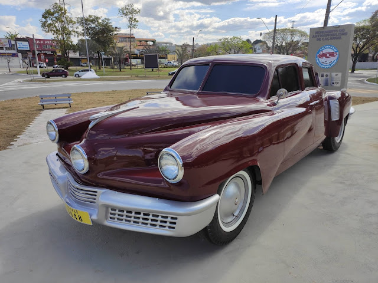
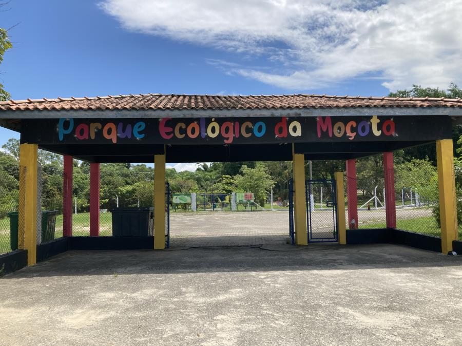
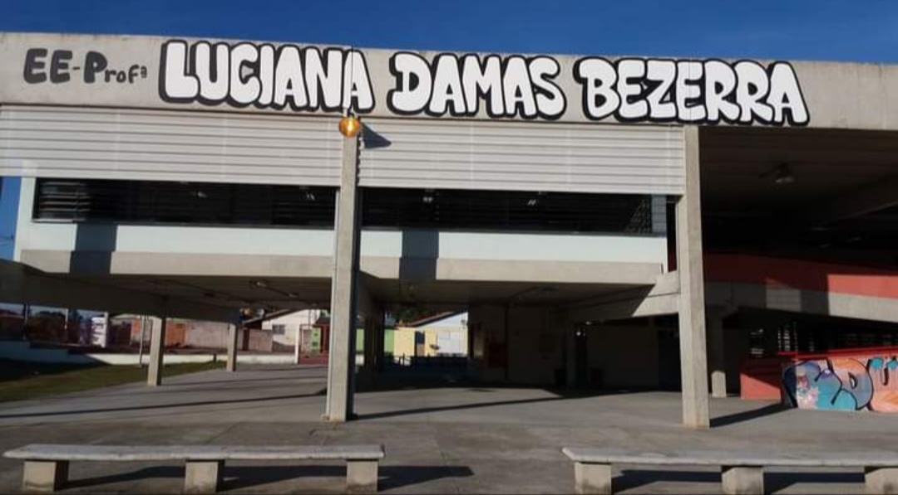
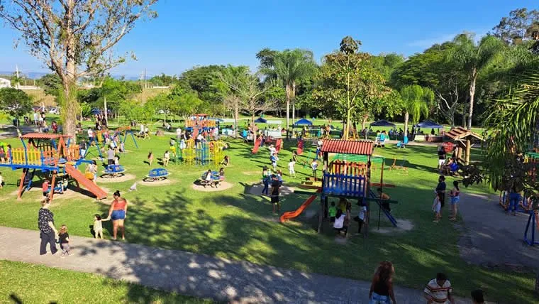
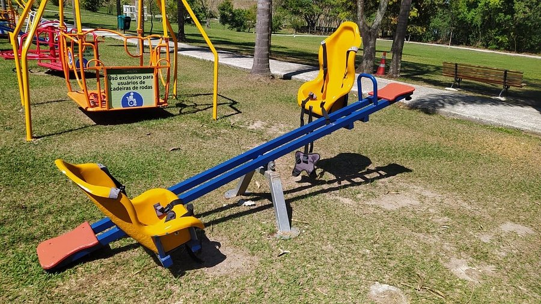

Faça um passeio por Caçapava - SP

Com 62 mil metros quadrados de área verde, o Parque Ecológico da Moçota reúne mais de cem espécies de árvores nativas da Mata Atlântica, conta com uma mata ciliar de 20.000m² que é abrigo de muitos animais, como capivaras, saruês, lagartos e muitas aves. Dispõe de pista de caminhada, parquinho infantil, parquinho inclusivo, mesas de xadrez, academia ao ar livre, academia de calistenia, gramado para piquenique, além de quiosque para prática de atividades culturais.

Professora Luciana Damas Bezerra é uma escola pública estadual em Caçapava, SP. Nessa instituição de ensino de educação básica há o funcionamento das etapas de formação de Ensino Fundamental e Ensino Médio.

